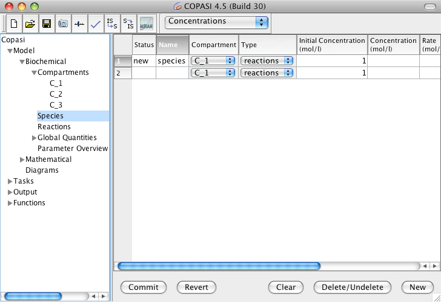
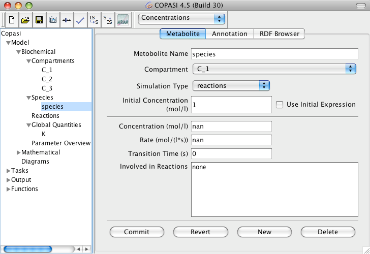
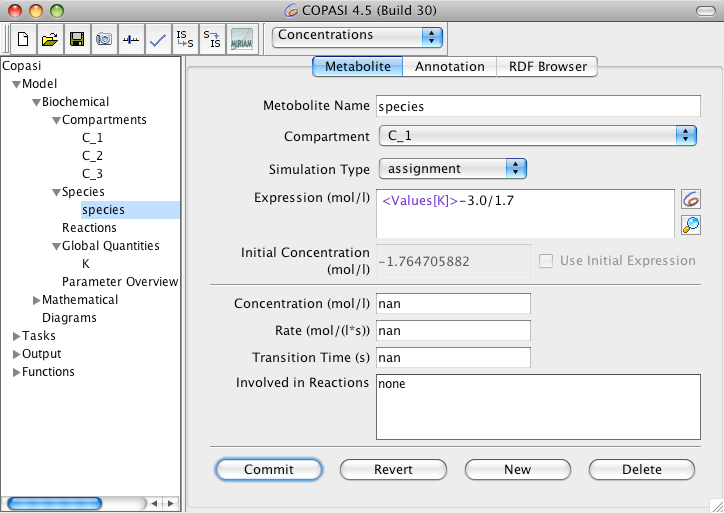
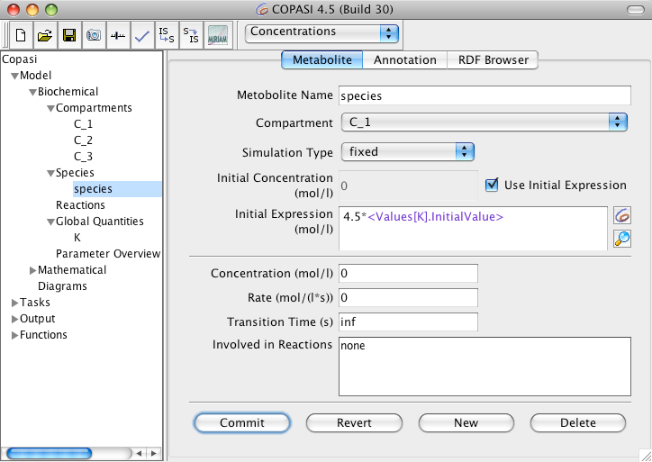
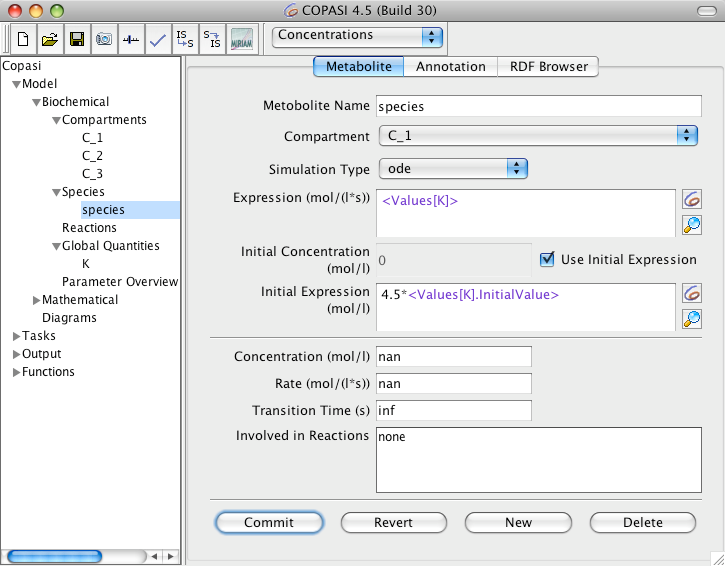

Adding new species works exactly the same as adding new compartment, so we strongly suggest reading the section if you haven't already done so. Here we will just cover the differences between adding a compartment and adding a species.
|  |
| Species Table with new Entry |
First of all in order to add a new species, as it is called in COPASI, you have to navigate to the Species branch of the object tree which is located in the Model->Biochemical branch directly below the Compartments. Here again you see a table (see above), but this table consists of nine columns. This is due to the fact that a species has more parameters than a compartment. The Status and Name columns should already be familiar from the compartments table. The other columns specify the compartment where the species is located in, the way the concentration of the species is calculated, initial concentration of the species, the transient concentration, the rate of change of the species as well as two mathematical expressions used to determine the initial concentration and the transient one, respectively. For newly created species the rate will be empty since it needs to be calculated first, e.g. during a
time course simulation.
When a species is added and the model does not contain a compartment yet, COPASI will automatically add a new compartment to the model and the species will be added to this compartment. If there already is one or more compartments, the species will be added to the first compartment in the list. This can be changed later.
To add a new species you have the same three ways as for adding compartments and if you are not familiar with those, we recommend to read that section first.
|  |
| Dialog for changing Species Parameters |
Editing the parameters of a species also works exactly the way it does for compartments. Either you double click on a species entry in the table, or you use the object tree to navigate to the species leaf you intend to edit. The parameters of a species lying on below the separator line are determined automatically and can not be changed by the user. The parameters that you can change are the Species Name, the Compartment the species belongs to, and how the concentration is calculated. Unless the Simulation Type is set to
assignment, its Initial Concentration could also be changed.
If you would rather change the initial particle number instead of the Initial Concentration, you should select
Particle Numbers in the drop down list in the menu bar at the top. This will change all displays in the program to use particle numbers rather than concentrations and you can now enter the Initial Particle Number (note the label will be changed). The volume used to calculate particle numbers from concentration comes from the compartment associated with the species.
If you change back to initial concentration, COPASI will internally recalculate the initial particle number. In some situations COPASI will prevent the user from changing the initial concentration. This is done when changing the concentration would lead to circular dependencies during the calculation of all initial values. The cause for this is most likely an assignment rule for the containing compartment. In such a case it is still possible to change the initial particle number.
Normally the concentration of a species is determined by its initial concentration and by the reaction kinetics of the reactions it participates in either as a substrate or a product. The reactions are listed at the bottom of the species widget (see above).
Species Simulation Types| Name | Description |
| reactions | the concentration/amount of the species is determined by the kinetic laws of the reactions that modify the species |
| fixed | the concentration/amount of the species has a constant value (which corresponds to the given initial value) |
| assignment | the concentration/amount of the species is determined by evaluating the given mathematical expression |
| ode | the rate of change of the species concentration/amount is determined by an ordinary differential equation |
Newer versions of COPASI also allow the concentration of a species to be determined by a mathematical expression or by providing an ordinary differential equation for its rate of change. In order to specify whether a species has a constant concentration/amount, it is determined by reactions, or its concentration/amount is calculated on the fly according to a mathematical expression, the drop down list called Simulation Type should be used. It contains four entries listed on the above table.
If you want the species to be calculated from a given mathematical expression you select the entry called
assignment from the drop down list. This enables a text field where the mathematical expression can be entered (see below). Likewise if you want the rate of change of the species concentration to be determined by an ordinary differential equation (ode) you select the entry called
ode from the drop down list.
|  |
| Species Widget with Assignment Rule |
|  |
| Species Widget with constant Species and Initial Assignment |
Not only the transient concentration of a species can be specified as a mathematical expression, but also the initial concentration of the compartment. If you want to specify such a mathematical expression for the initial concentration of a species, check the check box called Use Initial Expression.
An initial expression can be specified unless the Simulation Type drop down list is set to
assignment. Since the given assignment automatically acts as an initial assignment, there is no need to specify an additional initial assignment.
|  |
| Species Widget with ODE Rule and Initial Assignment |
The mathematical expressions that can be specified for rules and initial assignments may contain the same elements as the expressions used to defined function definitions. For a detailed description of the elements see User Defined Functions.
When it comes to referencing values of other model entities within mathematical expressions, there is a slight difference between the mathematical expression for a rule and that for an initial assignment. The former may reference transient values of other model entities whereas the latter may only reference initial values of other model entities.